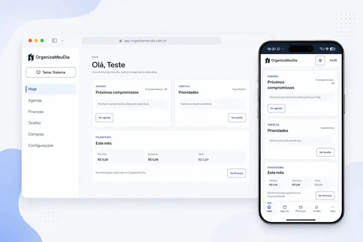
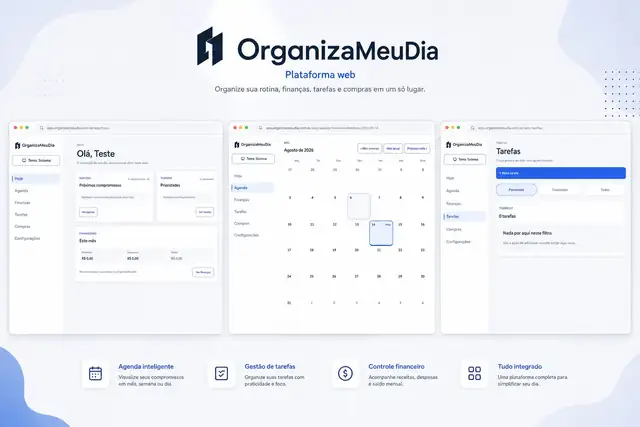

01
Produto próprio em desenvolvimento
OrganizaMeuDia
Organizar a rotina sem espalhar tudo em vários lugares.
Comecei o OrganizaMeuDia pensando em um problema simples: compromissos, tarefas, finanças e listas acabam ficando separados em vários aplicativos. A proposta é reunir essas partes da rotina em um único ambiente, com uma experiência que funcione bem no computador e no celular.
O problema
Informações importantes do dia a dia ficam espalhadas entre agenda, listas, aplicativos de tarefas e controles financeiros.
O que construí
Uma aplicação web com agenda, tarefas, organização financeira e listas de compras, adaptada para desktop e mobile.
Na prática
O usuário consegue ver o que precisa fazer, acompanhar compromissos e organizar diferentes áreas da rotina no mesmo lugar.
Código privado por ser um produto próprio em desenvolvimento.

